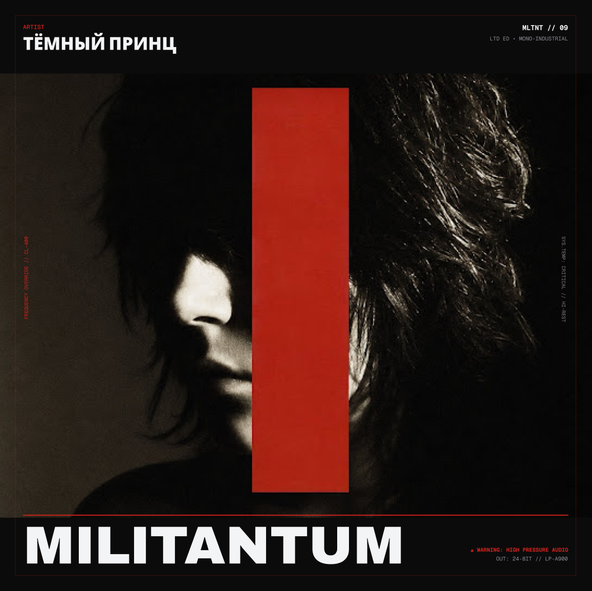

OFFICIAL NINTH RELEASE // 24-BIT
MILITANTUM
A severe, mono-industrial declaration of low-frequency pressure. Constructed with heavy analog machinery, direct frequency override synthesizers, and tape decay. An auditory assault designed to confront structural decay.
INITIATE AUDIO OVERRIDE

SYSTEM TRACK INDEX // MONO GENERATION
TRACKLISTING
17 TRACKSTOTAL DURATION 34:16 MIN
01 / MANIFESTO // STATEMENT
THE ART OF
STATIC PRESSURE
“MILITANTUM is not designed for comfort. It maps physical spaces through low frequencies, captured directly to tape without modern safety limits. Every piece holds a state of high compression — a sonic equivalent of reinforced concrete under load.”
Constructed entirely in a single mono signal, the record avoids stereophonic dispersion and directs maximum pressure to a central axis. Transients are deliberately clipped; high ends carry magnetic tape hiss. Built by Тёмный Принц for isolated concrete chambers.
ARTIST / BIOGRAPHICAL NOTE
MLNT—009 / SUBJECT PROFILEТЁМНЫЙ
ПРИНЦ
Тёмный Принц работает на стыке холодной электроники, искажённого вокала и низкочастотного давления. Его музыка собирает фрагменты городской ночи в прямые, физически ощутимые композиции — без лишнего шума, с точным ударом в центр.
В его треках мелодия и шум существуют как один механизм: голос растворяется в перегрузе, а ритм держит конструкцию на пределе. MILITANTUM продолжает эту линию — жёстко, монохромно и без попытки сгладить углы.
MILITANTUM / RELEASE NOTE
MILITANTUM появился как попытка собрать звук в одну несущую конструкцию. В основе — идея давления без декоративной дистанции: моно-сигнал, перегруженные синтезаторы, срезанные транзиенты и голос, оставленный внутри механизма, а не поверх него.
Альбом писался как серия коротких замкнутых пространств. У каждого трека свой режим: тревога, вспышка, холодная пауза или перегруз. Вместе они складываются в маршрут по ночному городу, где шум становится ритмом, а ритм — способом удержать форму.
02 / SPECIFICATIONS
- ARTIST
- ТЁМНЫЙ ПРИНЦ
- RELEASE
- MILITANTUM / 09
- FREQUENCY
- MONO-INDUSTRIAL
- OUTPUT
- 24-BIT / LP-A900
- SYSTEM
- CL-400 / HIGH PRESSURE